CODING AGENTS AS PIXEL WORLD MODELS
traex/DeepSeek-V4.1-Flash · common50_0046
点击播放 · 原生 RGB 像素
逐轮保存的候选
回放视频、检查图与代码变化。
每份候选均可单独播放。实际图片检查记录在下方工具轨迹中。
候选 01播放与检查图
点击播放 · 原生 RGB 像素
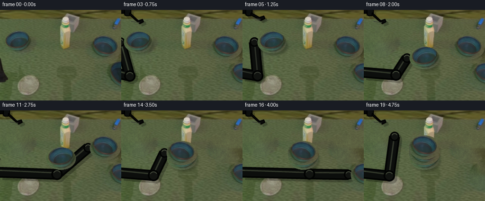
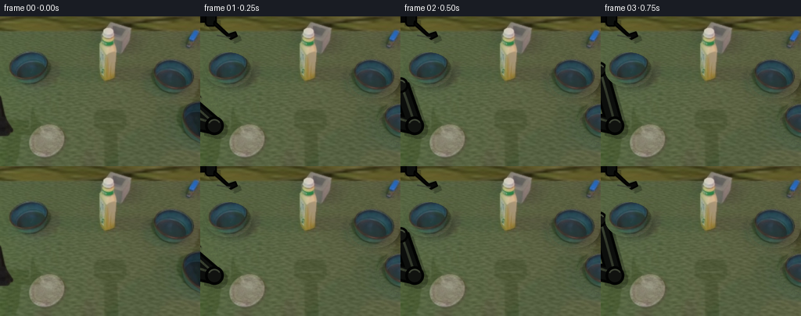
展开代码变化
--- 上一保存版本
+++ 本次保存版本
@@ -0,0 +1,268 @@
+from pathlib import Path
+
+import cv2
+import numpy as np
+from PIL import Image, ImageDraw, ImageFilter
+
+import artifact_io
+
+
+HERE = Path(__file__).resolve().parent
+W, H = 256, 192
+N = 20
+FPS = 4
+
+
+def ellipse_alpha(size, center, axes, feather=0.75):
+ """Anti-aliased elliptical alpha mask in a local sprite image."""
+ w, h = size
+ yy, xx = np.mgrid[0:h, 0:w]
+ cx, cy = center
+ ax, ay = axes
+ distance = ((xx - cx) / ax) ** 2 + ((yy - cy) / ay) ** 2
+ alpha = np.clip((1.0 - distance) * (max(ax, ay) / (2.0 * feather)) + 0.5, 0.0, 1.0)
+ return alpha.astype(np.float32)
+
+
+def make_sprite(frame, box, center, axes):
+ x0, y0, x1, y1 = box
+ crop = frame[y0:y1, x0:x1].copy()
+ local_center = (center[0] - x0, center[1] - y0)
+ alpha = ellipse_alpha((x1 - x0, y1 - y0), local_center, axes)
+ rgba = np.dstack([crop, np.round(alpha * 255.0).astype(np.uint8)])
+ return Image.fromarray(rgba, "RGBA"), (center[0] - x0, center[1] - y0)
+
+
+def fill_mask(shape, center, axes):
+ mask = np.zeros(shape, np.uint8)
+ cv2.ellipse(mask, (round(center[0]), round(center[1])),
+ (round(axes[0]), round(axes[1])), 0, 0, 360, 255, -1)
+ return mask
+
+
+def reconstruct_background(frame):
+ mask = np.zeros((H, W), np.uint8)
+ for center, axes in (
+ ((35.5, 68.5), (33, 26)),
+ ((222.0, 79.0), (36, 29)),
+ ((261.0, 137.0), (36, 30)),
+ ):
+ mask = np.maximum(mask, fill_mask((H, W), center, axes))
+
+ # Remove the resting arm/gripper silhouette as well as the three bowls.
+ arm_mask = np.zeros_like(mask)
+ cv2.rectangle(arm_mask, (0, 104), (23, 157), 255, -1)
+ mask = np.maximum(mask, arm_mask)
+
+ clean = cv2.inpaint(frame, mask, 8, cv2.INPAINT_TELEA)
+
+ # Restore a little of the mottled turf character lost during inpainting.
+ rng = np.random.default_rng(46)
+ fine = cv2.GaussianBlur(rng.normal(0.0, 1.0, (H, W)).astype(np.float32), (0, 0), 0.65)
+ broad = cv2.GaussianBlur(rng.normal(0.0, 1.0, (H, W)).astype(np.float32), (0, 0), 2.2)
+ fine /= max(float(fine.std()), 1e-6)
+ broad /= max(float(broad.std()), 1e-6)
+ texture = 4.0 * fine + 2.4 * broad
+ edge = cv2.GaussianBlur(mask, (0, 0), 1.4).astype(np.float32) / 255.0
+ tint = np.array([0.55, 0.72, 0.34], np.float32)
+ clean_f = clean.astype(np.float32) + edge[..., None] * texture[..., None] * tint
+ return np.clip(clean_f, 0, 255).astype(np.uint8)
+
+
+def paste_rgba(base, sprite, center, anchor, scale=1.0):
+ if abs(scale - 1.0) > 1e-4:
+ new_size = (max(1, round(sprite.width * scale)), max(1, round(sprite.height * scale)))
+ sprite = sprite.resize(new_size, Image.Resampling.LANCZOS)
+ anchor = (anchor[0] * scale, anchor[1] * scale)
+ x = round(center[0] - anchor[0])
+ y = round(center[1] - anchor[1])
+ base.alpha_composite(sprite, (x, y))
+
+
+def shadow_layer(cx, cy, axes, opacity=0.25, blur=2.2):
+ layer = Image.new("RGBA", (W, H), (0, 0, 0, 0))
+ draw = ImageDraw.Draw(layer)
+ x0 = cx - axes[0]
+ y0 = cy - axes[1]
+ x1 = cx + axes[0]
+ y1 = cy + axes[1]
+ draw.ellipse((x0, y0, x1, y1), fill=(3, 8, 3, round(255 * opacity)))
+ return layer.filter(ImageFilter.GaussianBlur(blur))
+
+
+def draw_arm_layer(root, elbow, open_amount, holding):
+ scale = 4
+ layer = Image.new("RGBA", (W * scale, H * scale), (0, 0, 0, 0))
+ draw = ImageDraw.Draw(layer)
+
+ def p(point):
+ return (round(point[0] * scale), round(point[1] * scale))
+
+ base = (-28.0, 130.0)
+ rx, ry = root
+ ex, ey = elbow
+
+ # The arm is drawn as fixed-width capsules, so every link remains rigid.
+ draw.line([p(base), p(elbow), p(root)], fill=(2, 3, 2, 255),
+ width=23 * scale, joint="curve")
+ draw.line([p(base), p(elbow), p(root)], fill=(12, 14, 12, 255),
+ width=16 * scale, joint="curve")
+ draw.line([p((-18, 126)), p((ex, ey - 3)), p((rx, ry - 4))],
+ fill=(40, 43, 38, 170), width=3 * scale, joint="curve")
+
+ for point, radius in ((base, 13), (elbow, 12), (root, 10)):
+ x, y = p(point)
+ r = radius * scale
+ draw.ellipse((x - r, y - r, x + r, y + r), fill=(2, 3, 2, 255))
+ r2 = round(r * 0.70)
+ draw.ellipse((x - r2, y - r2, x + r2, y + r2), fill=(17, 19, 16, 255))
+ draw.arc((x - r2, y - r2, x + r2, y + r2), 205, 330,
+ fill=(58, 61, 54, 170), width=2 * scale)
+
+ jaw = 18.0 + 7.0 * open_amount
+ # Wrist and palm.
+ draw.rounded_rectangle((p((-12, -8)), p((13, 8))), radius=7 * scale,
+ fill=(5, 6, 5, 255), outline=(0, 0, 0, 255), width=2 * scale)
+ draw.rounded_rectangle((p((6, -13)), p((21, 13))), radius=5 * scale,
+ fill=(13, 15, 13, 255), outline=(0, 0, 0, 255), width=2 * scale)
+ draw.line([p((-7, -5)), p((11, -5))], fill=(56, 59, 52, 165), width=2 * scale)
+
+ upper = [p((17, -10)), p((39, -jaw - 4)), p((47, -jaw)),
+ p((45, -jaw + 5)), p((36, -jaw + 2)), p((18, -6))]
+ lower = [p((17, 10)), p((39, jaw + 4)), p((47, jaw)),
+ p((45, jaw - 5)), p((36, jaw - 2)), p((18, 6))]
+ for jaw_poly in (upper, lower):
+ draw.polygon(jaw_poly, fill=(8, 9, 8, 255))
+ draw.line(jaw_poly + [jaw_poly[0]], fill=(0, 0, 0, 255),
+ width=2 * scale, joint="curve")
+
+ draw.line([p((21, -jaw + 1)), p((38, -jaw - 2))],
+ fill=(54, 57, 50, 145), width=2 * scale)
+ draw.line([p((21, jaw - 1)), p((38, jaw + 2))],
+ fill=(54, 57, 50, 145), width=2 * scale)
+ return layer.resize((W, H), Image.Resampling.LANCZOS)
+
+
+def arm_elbow(root):
+ rx, ry = root
+ ex = 18.0 + max(0.0, rx) * 0.55
+ ey = 140.0 - max(0.0, rx) * 0.025
+ return (ex, ey)
+
+
+def offset_layer(layer, dx, dy, opacity):
+ shifted = Image.new("RGBA", (W, H), (0, 0, 0, 0))
+ shifted.alpha_composite(layer, (round(dx), round(dy)))
+ alpha = shifted.getchannel("A").point(lambda value: round(value * opacity))
+ shifted.putalpha(alpha)
+ return shifted
+
+
+def render(frames, first, background, left_sprite, left_anchor, bowl_sprite, bowl_anchor):
+ # root position, jaw opening, object carried by the gripper
+ states = [
+ ((-20.0, 130.0), 1.0, None),
+ ((-10.0, 116.0), 1.0, None),
+ ((0.0, 88.0), 1.0, None),
+ ((-2.0, 68.0), 1.0, None),
+ ((-2.0, 68.0), 0.0, "left"),
+ ((25.0, 68.0), 0.0, "left"),
+ ((65.0, 86.0), 0.0, "left"),
+ ((91.0, 102.0), 0.0, "left"),
+ ((91.0, 102.0), 1.0, None),
+ ((130.0, 42.0), 1.0, None),
+ ((170.0, 55.0), 1.0, None),
+ ((186.0, 79.0), 1.0, None),
+ ((186.0, 79.0), 0.0, "right"),
+ ((91.0, 90.0), 0.0, "right"),
+ ((91.0, 90.0), 1.0, None),
+ ((175.0, 65.0), 1.0, None),
+ ((224.0, 136.0), 1.0, None),
+ ((224.0, 124.0), 0.0, "br"),
+ ((91.0, 78.0), 0.0, "br"),
+ ((65.0, 55.0), 1.0, None),
+ ]
+
+ for index, (root, opening, held) in enumerate(states):
+ if index == 0:
+ frames.append(first.copy())
+ continue
+
+ canvas = Image.fromarray(background, "RGB").convert("RGBA")
+
+ bowl_states = {
+ "left": [35.0, 68.0, 1.0],
+ "right": [222.0, 79.0, 1.0],
+ "br": [261.0, 136.0, 1.0],
+ }
+ if index >= 5:
+ bowl_states["left"] = [128.0, 102.0, 1.06]
+ if index >= 14:
+ bowl_states["right"] = [128.0, 90.0, 1.0]
+ if index >= 19:
+ bowl_states["br"] = [128.0, 78.0, 1.0]
+
+ if held == "left":
+ bowl_states["left"] = [root[0] + 36.0, root[1], min(1.06, 1.0 + 0.015 * max(0, index - 4))]
+ elif held == "right":
+ bowl_states["right"] = [root[0] + 36.0, root[1], 1.0]
+ elif held == "br":
+ bowl_states["br"] = [root[0] + 36.0, root[1], 1.0]
+
+ fixed = [(name, values) for name, values in bowl_states.items() if name != held]
+ fixed.sort(key=lambda item: item[1][1], reverse=True)
+
+ # Ground shadows sit beneath the rigid bodies.
+ for _, (cx, cy, scale) in fixed:
+ canvas = Image.alpha_composite(
+ canvas, shadow_layer(cx + 4, cy + 8, (29 * scale, 17 * scale), 0.22)
+ )
+
+ arm = draw_arm_layer(root, arm_elbow(root), opening, held is not None)
+ canvas = Image.alpha_composite(canvas, offset_layer(arm, 5, 5, 0.25))
+ canvas = Image.alpha_composite(canvas, arm)
+
+ for name, (cx, cy, scale) in fixed:
+ if name == "left":
+ paste_rgba(canvas, left_sprite, (cx, cy), left_anchor, scale)
+ else:
+ paste_rgba(canvas, bowl_sprite, (cx, cy), bowl_anchor, scale)
+
+ if held is not None:
+ cx, cy, scale = bowl_states[held]
+ canvas = Image.alpha_composite(
+ canvas, shadow_layer(cx + 5, cy + 9, (30 * scale, 18 * scale), 0.27)
+ )
+ # The claw surrounds the carried bowl; the bowl itself hides the inner fingertips.
+ canvas = Image.alpha_composite(canvas, offset_layer(arm, 3, 3, 0.18))
+ canvas = Image.alpha_composite(canvas, arm)
+ if held == "left":
+ paste_rgba(canvas, left_sprite, (cx, cy), left_anchor, scale)
+ else:
+ paste_rgba(canvas, bowl_sprite, (cx, cy), bowl_anchor, scale)
+
+ frames.append(np.asarray(canvas.convert("RGB"), dtype=np.uint8))
+
+
+def main():
+ first = np.asarray(Image.open(HERE / "first_frame.png").convert("RGB"), dtype=np.uint8)
+ assert first.shape == (H, W, 3)
+
+ background = reconstruct_background(first)
+ Image.fromarray(background).save(HERE / ".tmp" / "clean_background.png")
+
+ left_sprite, left_anchor = make_sprite(
+ first, (5, 42, 70, 94), (36.0, 68.0), (30.0, 22.5)
+ )
+ bowl_sprite, bowl_anchor = make_sprite(
+ first, (187, 51, 256, 108), (222.0, 79.0), (33.0, 25.5)
+ )
+
+ frames = []
+ render(frames, first, background, left_sprite, left_anchor, bowl_sprite, bowl_anchor)
+ assert len(frames) == N and frames[0].shape == (H, W, 3)
+ artifact_io.save(frames, HERE)
+
+
+if __name__ == "__main__":
+ main()
可观测工具轨迹
实际执行的命令与返回图片。
命令 1exit 0
/bin/bash -c "pwd && rg --files -g 'prompt.txt' -g 'GENERATION_RULES.md' -g '"'!*.png'"' -g '"'!*.mp4'"'"
命令 2exit 0
/bin/bash -c 'ls -la'
命令 3exit 0
/bin/bash -c 'cat prompt.txt'
命令 4exit 0
/bin/bash -c 'cat GENERATION_RULES.md'
命令 5exit 0
/bin/bash -c "cat task_spec.json && sed -n '1,240p' artifact_io.py"
命令 6exit 127
/bin/bash -c "file first_frame.png && python - <<'PY'
from PIL import Image
im=Image.open('first_frame.png')
print(im.size, im.mode)
PY"命令 7exit 0
/bin/bash -c "python - <<'PY'
from PIL import Image
im=Image.open('first_frame.png')
im.resize((1024,768), Image.Resampling.NEAREST).save('.tmp/first_big.png')
for name, box in {'left':(5,40,70,95),'right':(190,50,256,105),'bottom':(225,110,256,165),'center':(70,70,180,160)}.items():
im.crop(box).resize(((box[2]-box[0])*6,(box[3]-box[1])*6), Image.Resampling.NEAREST).save(f'.tmp/{name}.png')
PY"命令 8exit 0
/bin/bash -c "python - <<'PY' import importlib.util for m in ['numpy','PIL','cv2','scipy','skimage','imageio','ffmpeg']: print(m, bool(importlib.util.find_spec(m))) PY ffmpeg -version | head -2 || true"
命令 9exit 0
/bin/bash -c "python - <<'PY'
from PIL import Image
im=Image.open('first_frame.png')
# right bowl exact box and left bowl
for name, box in {'bowlL':(8,46,67,90),'bowlR':(191,55,255,102),'bowlBR':(231,112,256,162)}.items():
im.crop(box).resize(((box[2]-box[0])*10,(box[3]-box[1])*10), Image.Resampling.NEAREST).save(f'.tmp/{name}.png')
PY"命令 10exit 0
/bin/bash -c "python - <<'PY'
from PIL import Image
import numpy as np, cv2
im=np.array(Image.open('first_frame.png'))
hsv=cv2.cvtColor(im, cv2.COLOR_RGB2HSV)
for name,box in {'bg':(100,120,180,180),'left':(8,46,68,91),'right':(190,54,256,103),'br':(230,110,256,162),'black':(0,110,20,150),'bottle':(125,0,152,90)}.items():
x0,y0,x1,y1=box
arr=im[y0:y1,x0:x1]; h=hsv[y0:y1,x0:x1]
print(name, 'rgb mean', arr.reshape(-1,3).mean(0).round(1), 'hsv', h.reshape(-1,3).mean(0).round(1), 'ranges', arr.reshape(-1,3).min(0), arr.reshape(-1,3).max(0))
PY"命令 11exit 0
/bin/bash -c "python - <<'PY'
import cv2, numpy as np
from PIL import Image
im=np.array(Image.open('first_frame.png'))
# Save labeled edge visualization
rgb=im.copy()
# make abs diff from background model? use saturation + hue
hsv=cv2.cvtColor(im,cv2.COLOR_RGB2HSV)
mask=((hsv[:,:,0]>45)&(hsv[:,:,0]<100)&(hsv[:,:,1]>55)&(hsv[:,:,2]<120)).astype(np.uint8)*255
mask=cv2.medianBlur(mask,3)
Image.fromarray(mask).resize((1024,768),Image.Resampling.NEAREST).save('.tmp/mask.png')
# sample key pixels grid
for y in [0,5,15,30,50,70,90,110,130,150,170,190]:
print(y,[tuple(im[y,x]) for x in [0,30,64,96,128,160,192,224,255]])
PY"命令 12exit 0
/bin/bash -c 'python generate.py'
命令 13exit 0
/bin/bash -c "python - <<'PY'
from PIL import Image
for i in [1,3,4,8,12,13,17,18,19]:
im=Image.open(f'frames/{i:02d}.png')
im.resize((1024,768), Image.Resampling.NEAREST).save(f'.tmp/f{i:02d}_big.png')
PY"命令 14exit 0
/bin/bash -c "python - <<'PY'
from pathlib import Path
import json, numpy as np
from PIL import Image
spec=json.loads(Path('task_spec.json').read_text())
z=np.load('pixels.npz')['pixels']
frames=[]
for p in sorted(Path('frames').glob('*.png')):
frames.append(np.asarray(Image.open(p).convert('RGB')))
frames=np.stack(frames)
first=np.asarray(Image.open('first_frame.png').convert('RGB'))
print('shape', frames.shape, 'dtype', frames.dtype)
print('first identical', np.array_equal(frames[0], first), 'maxdiff', np.abs(frames[0].astype(int)-first.astype(int)).max())
print('npz shape', z.shape, 'packed dtype', z.dtype)
# reconstructed pixels from npz
recon=np.stack([(z[:,:,i]>>16)&255 for i in range(20)], axis=-1)
print('npz first identical', np.array_equal(recon[0], first))
for i in range(1,20):
d=np.abs(frames[i].astype(np.int16)-frames[i-1].astype(np.int16))
print(f'{i:02d}: changed={np.any(d,axis=2).sum():5d}, mean={d.mean():.2f}, max={d.max()}')
PY"命令 15exit 0
/bin/bash -c "python - <<'PY'
import numpy as np
from PIL import Image
z=np.load('pixels.npz')['pixels']
first=np.asarray(Image.open('first_frame.png').convert('RGB')).astype(np.uint32)
packed=(first[:,:,0]<<16)|(first[:,:,1]<<8)|first[:,:,2]
d=np.abs(z[:,:,0].astype(np.int64)-packed.astype(np.int64))
print('mismatch pixels', np.count_nonzero(d), 'max packed diff', d.max())
ys,xs=np.where(d"'!=0)
if len(xs):
print('"'bbox', xs.min(),ys.min(),xs.max(),ys.max())
for y,x in list(zip(ys,xs))[:20]: print(x,y,z[y,x,0],packed[y,x])
PY"命令 16exit 0
/bin/bash -c "python - <<'PY'
import numpy as np
z=np.load('pixels.npz')['pixels']
recon=np.stack([(z[:,:,i]>>16)&255 for i in range(20)],axis=-1)
print(recon.shape)
print(z[0,0,0], (z[0,0,0]>>16)&255, recon[0,0])
PY"命令 17exit 0
/bin/bash -c "python -m py_compile generate.py && sha256sum frames/00.png first_frame.png && ls -lh pixels.npz index.html inspection.png transition_check.png frames | sed -n '1,30p'"
视觉工具实际返回图片 1

视觉工具实际返回图片 2
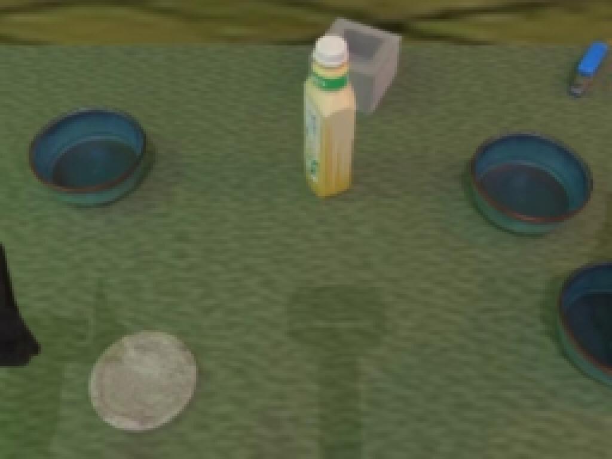
视觉工具实际返回图片 3
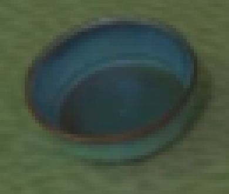
视觉工具实际返回图片 4
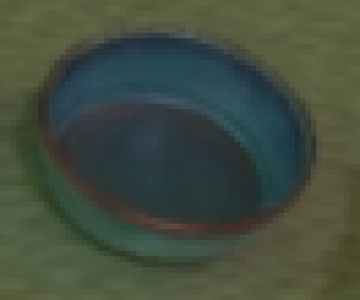
视觉工具实际返回图片 5
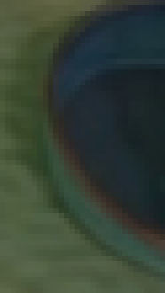
视觉工具实际返回图片 6
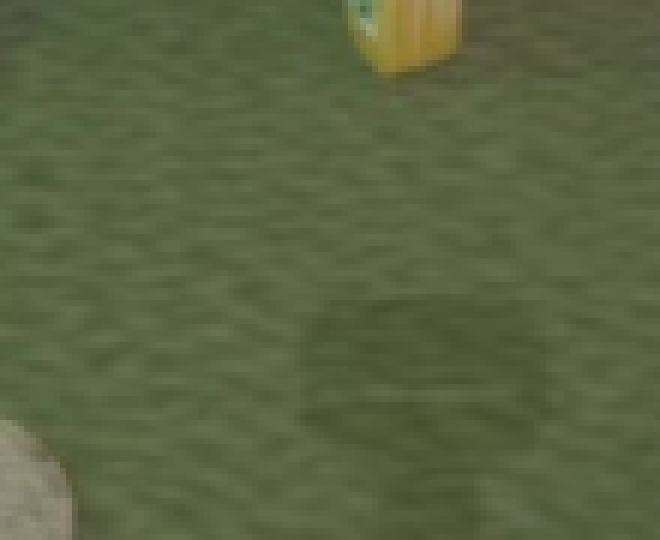
视觉工具实际返回图片 7
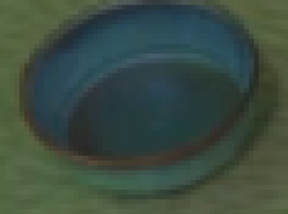
视觉工具实际返回图片 8
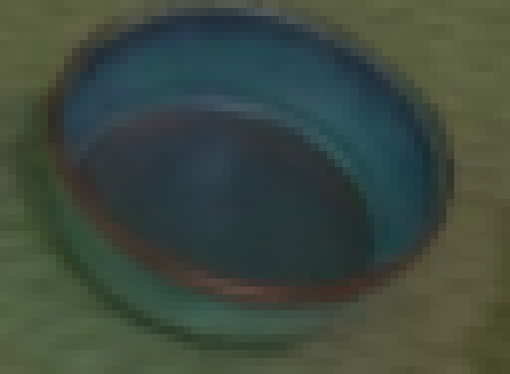
视觉工具实际返回图片 9
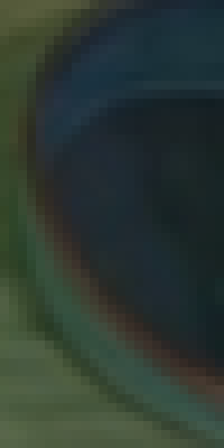
视觉工具实际返回图片 10
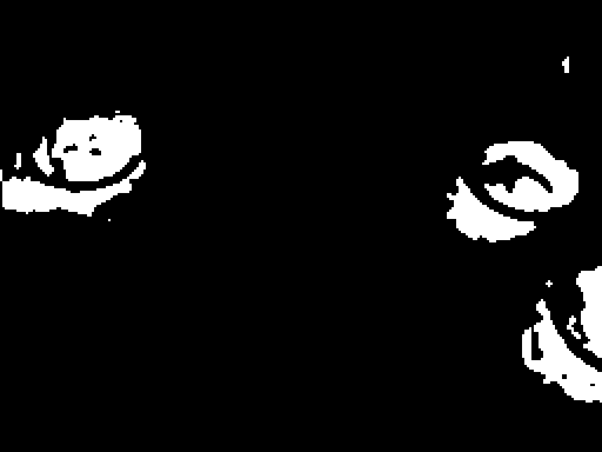
视觉工具实际返回图片 11

视觉工具实际返回图片 12
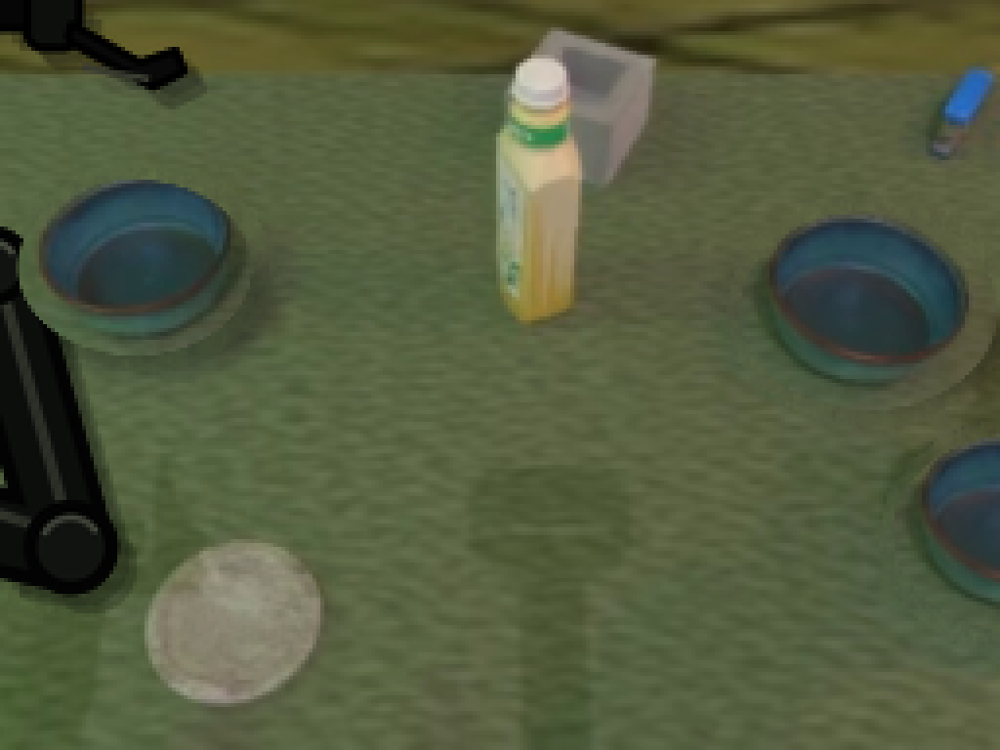
视觉工具实际返回图片 13
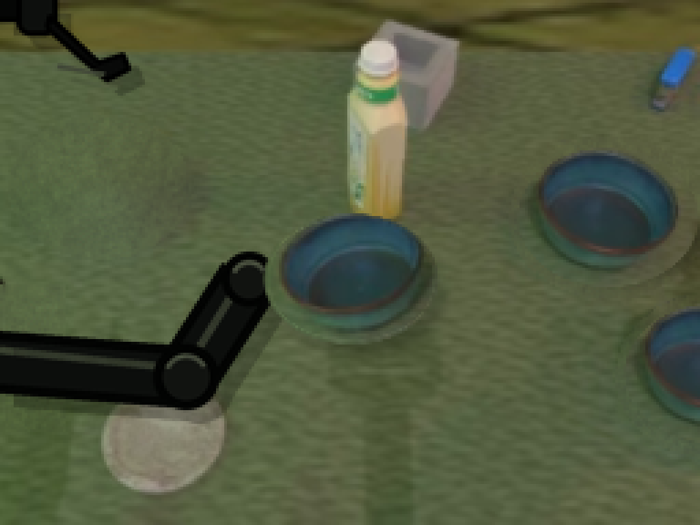
视觉工具实际返回图片 14
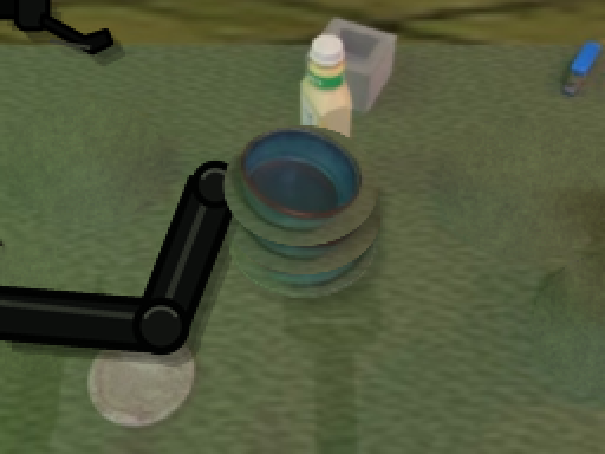
视觉工具实际返回图片 15
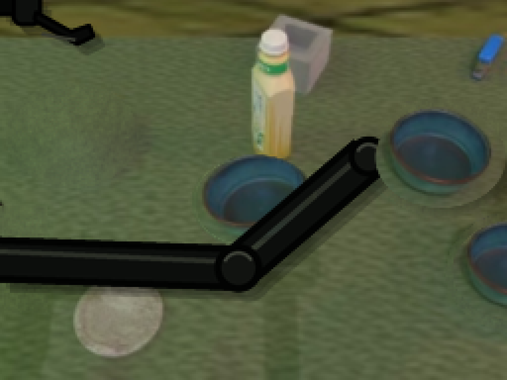
视觉工具实际返回图片 16
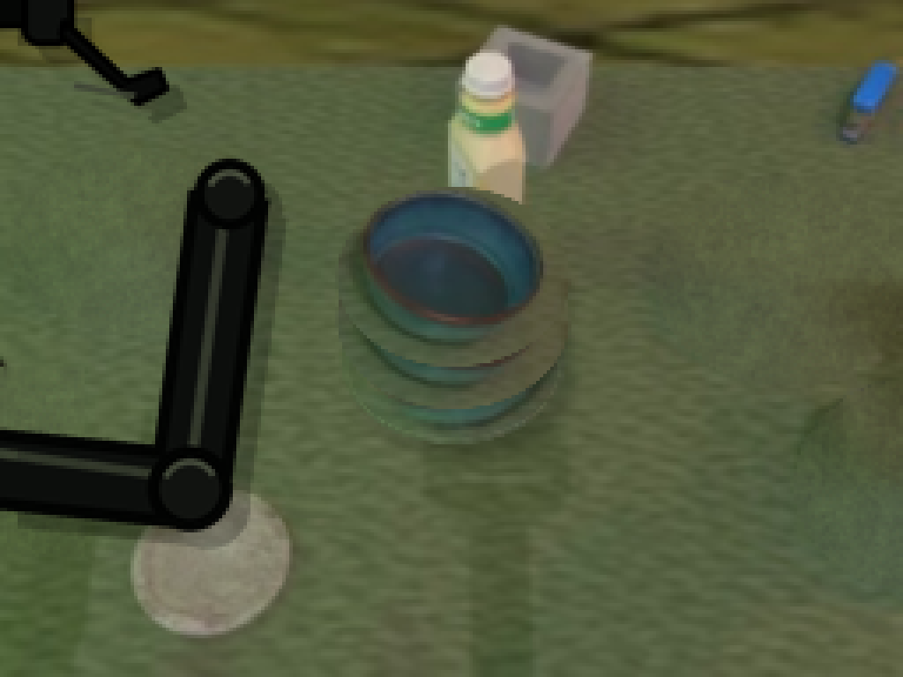
视觉工具实际返回图片 17
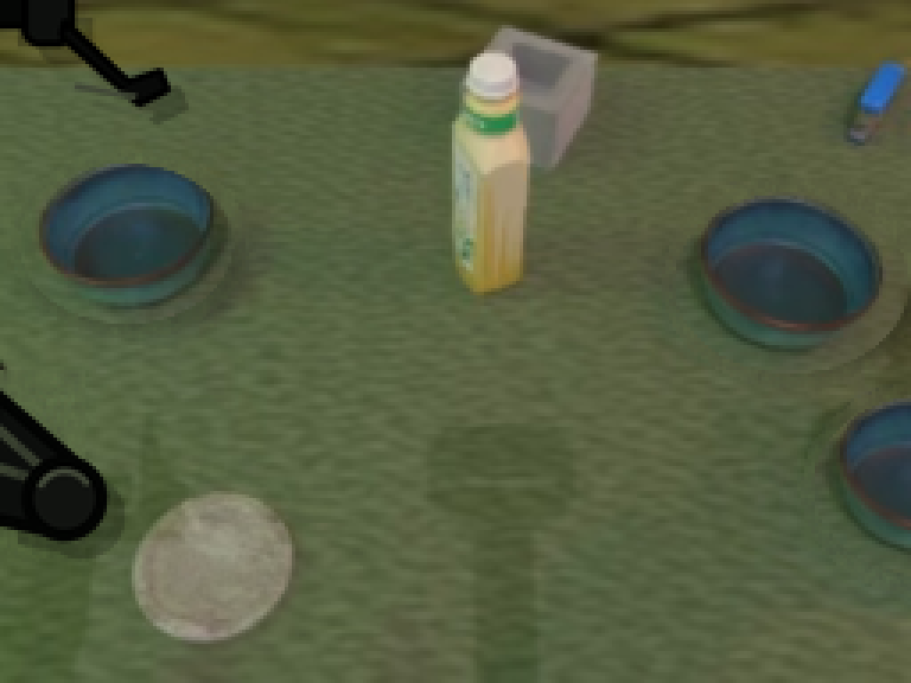
视觉工具实际返回图片 18
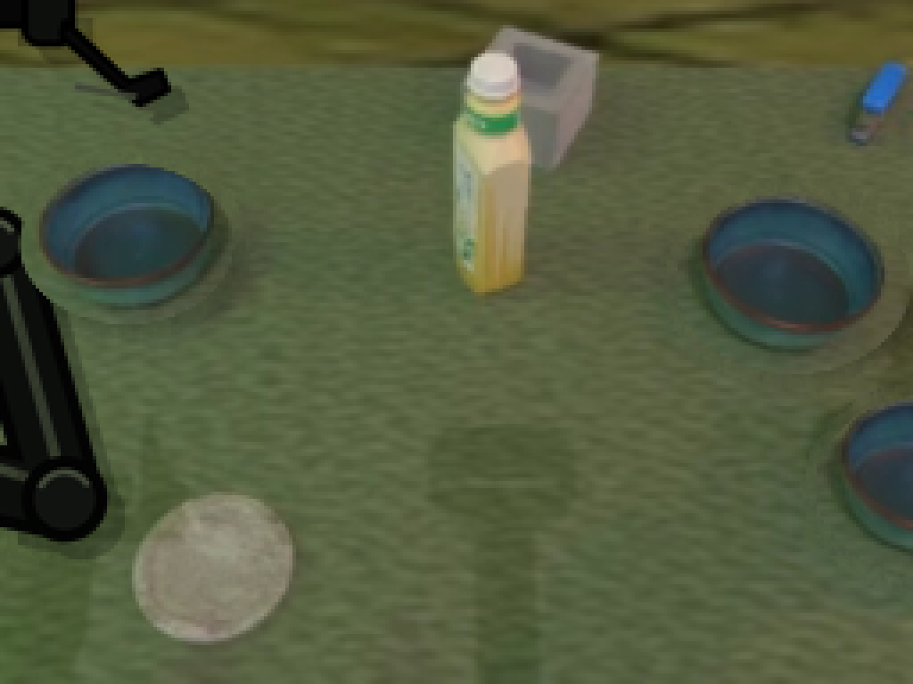
视觉工具实际返回图片 19
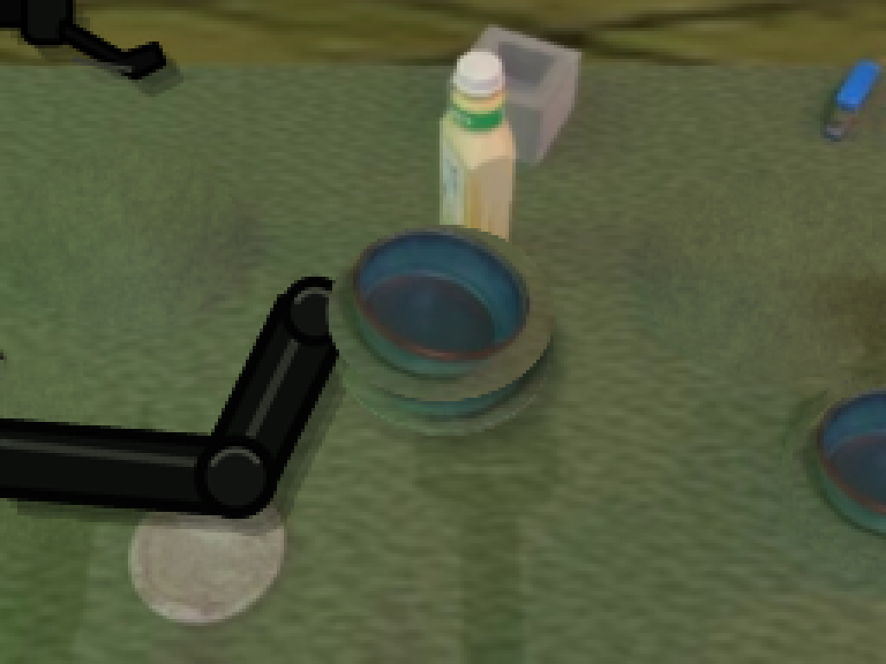
视觉工具实际返回图片 20
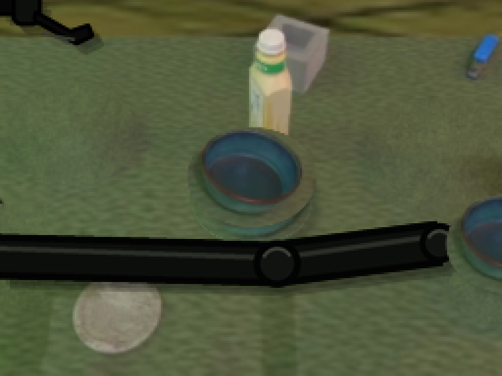
视觉工具实际返回图片 21
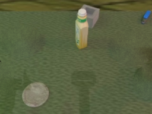
视觉工具实际返回图片 22

保存候选 1 份；完成命令 17 次；可验证图片返回 22 张。原始 API 响应与完整日志保留在本地。